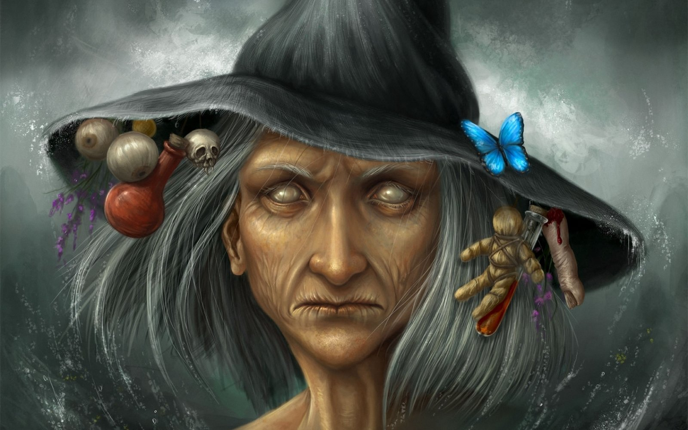

Las leyendas, mitos e historias que circulan alrededor de las brujas son diversos y muy variados. Y es que ya no sólo por los poderes que se le atribuían atraen el interés de la gente. Su aspecto sombrío y lúgubre, su inseparable gato negro, su escoba, sus pociones,... todo el entorno de las brujas les da un aire misterioso que desde siempre ha llamado la atención.
BrujasDebemos tener claro que todo lo que hemos comentado anteriormente es una imagen bastante estereotipada de las brujas. Realmente, ¿qué hay de cierto en todo ello? Existen dos tipos de posturas al respecto. La primera de ellas sostiene que las brujas eran seres demoníacos que tenían contacto directo con el diablo. La segunda dice que tan sólo eran mujeres paganas que adoraban a la noche y a la Luna, en vez de al Dios que apoyaba la Inquisición. Y que por ello acabaron como acabaron. Pero vamos a explicar un poco más cada una de esas posturas.
Como ya hemos comentado, la primera de ellas, la conservadora podríamos decir, sostiene que eran seres malignos. Además de sus poderes oscuros, también se les creía envidiosas, egoístas y malas. Además, se les atribuía la capacidad de poder ejercer influencias sobre personas, animales y cosas. Del mismo modo que podían componer hechizos de amor, de odio, encantamientos… Y para postre se comunicaban con el diablo. Como consecuencia de todo ello, la gente de la época les tenía verdadero pavor.
Según esta posición, se podía llegar a ser bruja de dos formas diferentes: por herencia o a través de un pacto con el diablo. Igual que había dos formas de llegar a ser brujas, también habían dos tipos de brujas: las “chupasangre” (se les inculpaba chupar la sangre a los niños y robarlos para realizar hechizos y rituales) y las “espías” (éstas estaban en las calles y vigilaban y controlaban a la gente).
La segunda postura que te hemos presentado contrasta bastante con esta. Esta posición asegura que quizá sólo fueron mujeres que no adoraban a más Dios que la noche o la madre Tierra. Y puede que esas costumbres chocarán con las mentes de la época. Pero que todo su lado maligno es sólo efecto del pánico que sentía la gente hacia ellas.
Lo único realmente claro es que fueran lo que fueran, tuvieron que pagar un precio altísimo por su paganismo. Se montó una compleja maquinaria de busca y captura de las brujas allí donde se hallaran. No importara donde ni como, pero la Inquisición siempre las alcanzaba. Y aunque nunca fue demostrable que fueran satánicas, ante la duda se las quemaba vivas. Nunca tuvieron ninguna oportunidad de demostrar su inocencia. Con una denuncia o incluso habladurías de haberla visto en reuniones nocturnas, sospechosas o incluso realizar prodigios, la persona acusada era detenida y casi siempre asesinada.